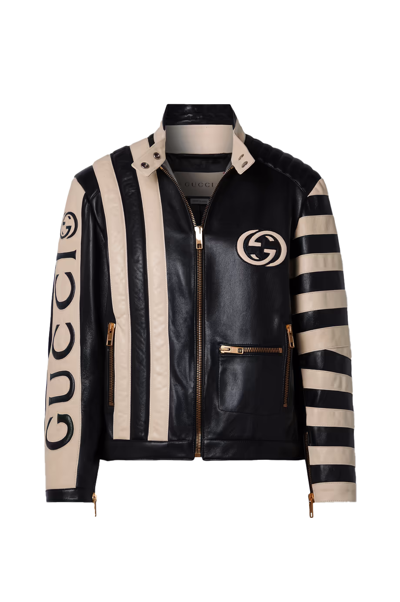
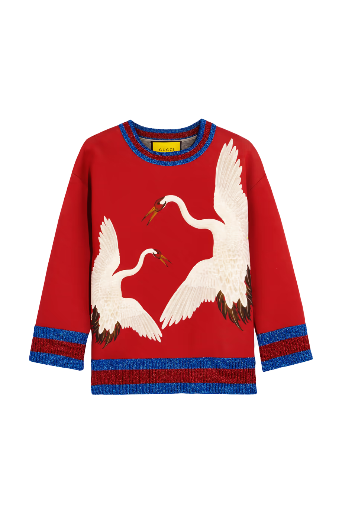
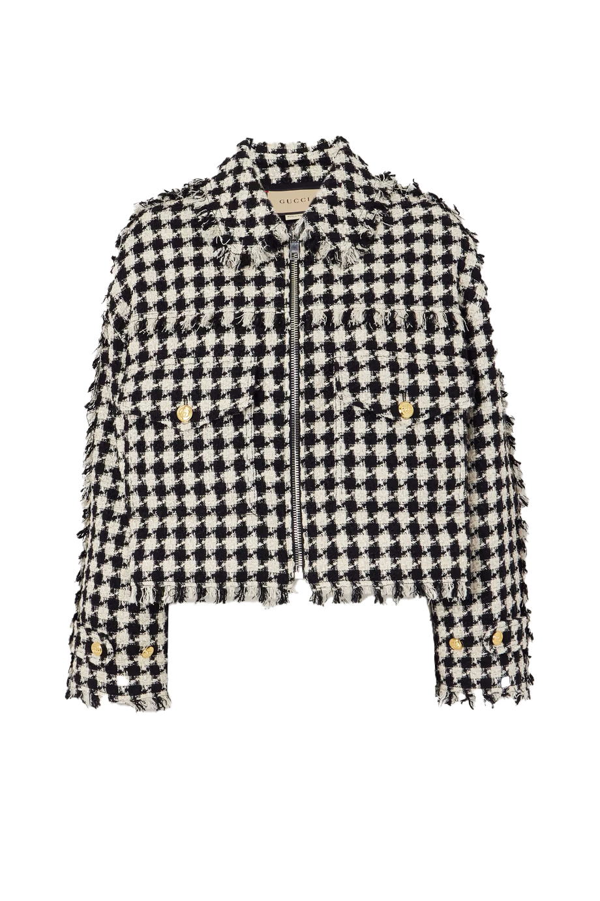
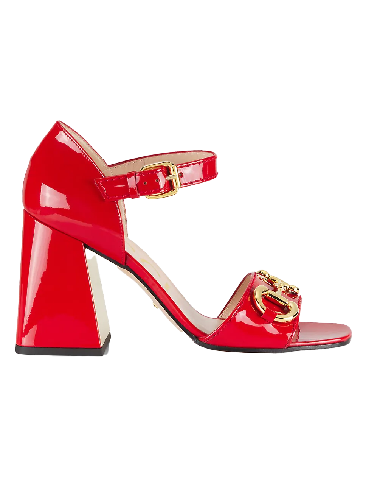
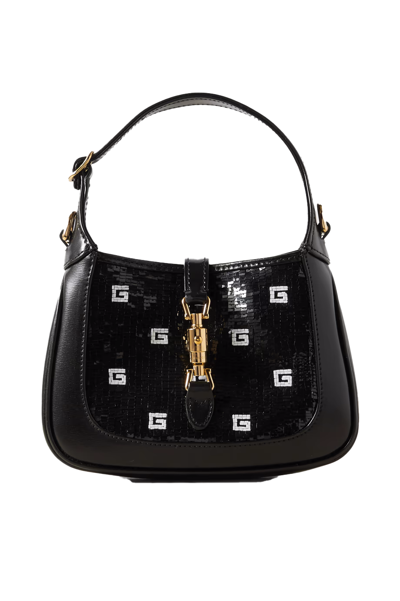
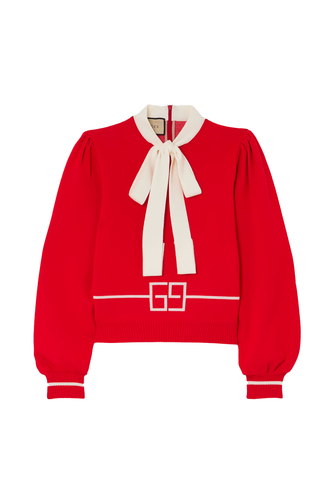

STRIPED LEATHER BIKER JACKET
Gucci's biker jacket is straight from the house's Spring '23 runway, where it was styled with a mini skirt and knee-high socks. Made from supple leather, it's adorned with brass zippers, quilted panels and the brand's iconic 'GG' logo in plush lettering.

PRINTED BONDED COTTON-JERSEY SWEATSHIRT
Gucci's soft sweatshirt is patterned with the house's signature heron print. This relaxed-fit piece has metallic blue and red striped trims - a nod to the label's heritage webbing.

FRAYED PADDED GINGHAM COTTON-BLEND TWEED BOMBER JACKET
Gucci's take on traditional tweed feels super fresh. Modeled on sporty bomber styles, this jacket is lightly padded and has frayed trims. The gold-tone buttons are engraved with the Maison's iconic 'GG'.

BABY BUCKLE HORSEBIT ANKLE-STRAP SANDALS
Elevate your footwear collection with the Gucci Red Buckle Shoe, a symbol of unparalleled elegance. Crafted from luxurious red leather and adorned with an iconic silver Gucci buckle, these shoes epitomize the perfect blend of fashion-forward design and timeless sophistication, ensuring you step out in style with every wear.

JACKIE 1961 SEQUIN MINI BAG
Once again at the forefront, the Jackie 1961's recognizable shape is enhanced with an additional, detachable shoulder strap. Attached to the bag with a buckle closure, the second strap adds a contemporary feel to the archival style, providing new ways to wear—from top handle, to shoulder and cross body. The style is introduced in black and white silk satin with sequins for the latest collection.

SQUARE GG WOOL JACQUARD KNIT TOP
Essential pieces in the Pre-Fall 2023 collection are embellished with signature Gucci motifs for the wardrobe. Here, the House's monogram motif is presented across a wool jacquard, creating an unexpected contrast when teamed with the romantic self-tie neck bow and lightly puffed sleeves.